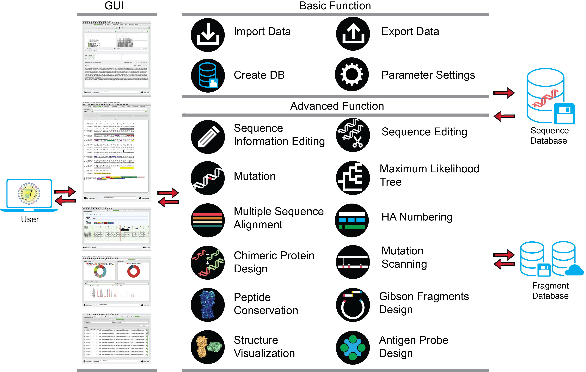
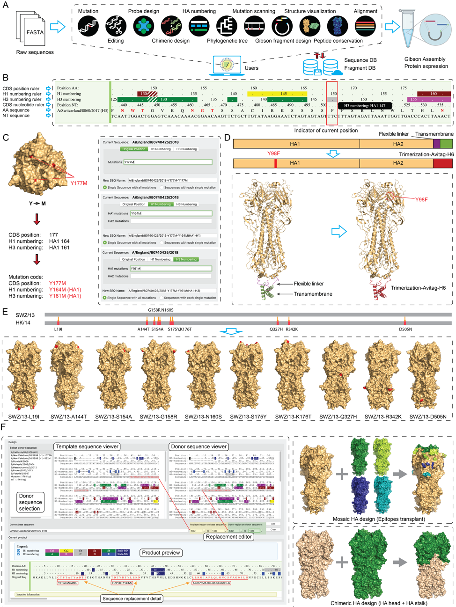

Librator, a platform for optimized sequence editing, design, and expression of influenza virus proteins
Artificial mutagenesis and chimeric/mosaic protein engineering have laid the foundation for antigenic characterization and universal vaccine design for influenza viruses. However, both methods require vast sequence editing and protein expression, which are subject to expensive reagent costs and inefficient workflow, limiting their applicability and the progress of related research. To overcome these shortages, we developed Librator, a system for designing protein sequences of Hemagglutinin (HA) and Neuraminidase (NA) of type A influenza virus and standardized fragments of Gibson Assembly4 cloning. We developed an optimized fragment design based on peptide conservation of all historical HA and NA sequences to ensure fragments are reusable and compatible, allowing for significant reagent savings. Furthermore, with Librator’s graphical user interface and built-in sequence editing functions, biologists can easily mutate target residues and design sequences for antigen probes and chimeric/mosaic proteins efficiently and accurately. Use of Librator in our lab has demonstrated that it can help biologists design HA and NA sequences efficiently and express them economically.
Updates
Sep,16,2021 Librator-v1.0.0-beta version is released. See here for details.
Apr,29,2021 pre-print of Librator has been uploaded to bioRxiv. See here for details.
Apr,18,2021 Librator-v1.0.0-alpha version is released. See here for details.
Github Page
Librator is developed using Python 3. All the source code are available on Github PagePre-print
For more details about Librator, please refer to our paper: Li, et al., Librator, a platform for optimized sequence editing, design, and expression of influenza virus proteins. 2021System structure of Librator
Librator is comprised of a UI layer (GUI), logical layer (all functions) and data layer (SQL databases). Users are allowed to finish all operations using the GUI. All functions can be divided into two broad categories: basic function and advanced function. Basic function includes I/O operations and database (DB) operations, and advanced function includes sequence design/editing, fragment design, phylogenetic analysis and structure visualization.
Librator enables effciant and accurate design of influenza sequences
Librator functions as an integrated graphical processing platform for influenza sequences. Librator seamlessly connects nucleotide sequences (from public sequence databases) and lab work (e.g. Gibson cloning, protein expression), and it contains a variety of functions to facilitate biologists’ managing, editing and accessing their sequences, aimed at eventually improving the efficiency of sequence design and expression. This software entrusts all error-prone sequence editing and data processing tasks to the background algorithm, and users are able to design their sequences with a few clicks on the GUI. This feature greatly facilitates the work of biologists who are not familiar with command-line tools, as well as reduces the possibility of artificial mistakes. With the help of Librator, users can complete all sequence design-related operations in this software, and no longer be bothered by either difficult-to-read raw sequences or switching back and forth between different software.
Fragment design for influenza HA proteins
Based on a comprehensive investigation of peptide conservation using all historic HA and NA protein sequences available, we determined three (on HA genome) and two (on NA genome) highly conserved regions as joint regions for Gibson clone fragment design. Accordingly, these joint regions split the HA and NA genomes into four and three fragments with appropriate size, respectively, thus balancing the reusability and cost. According to the evolutionary history of influenza HA subtypes, we designed uniform fragments on the basis of a classic H1 sequence (A/California/7/2009, H1N1) and a classic H3 sequence (A/Aichi/2/1968, H3N2). We aligned all group 1 HAs (H1, H2, H5, H6, H8, H9, H11, H12, H13, H16, H17, and H18) to the H1 template and all group 2 HAs (H3, H4, H7, H10, H14, H15) to the H3 template for fragment design. For NAs, we designed uniform fragments for each subtype by aligning each of the NA sequences to the template of their respective subtypes. This template-mapping-based fragment design ensures that all fragments are standardized and not affected by either different batches or sporadic insertion/deletion events (e.g. a deletion 130 between pre-1994 and post-1994 human seasonal H1N1, or insertions in the cleavage site of high pathogenic avian H5 and H7).